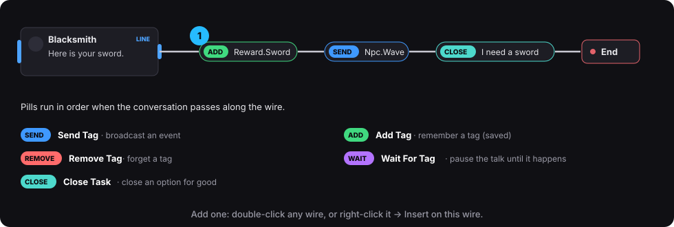

Actions (pills on wires)
Actions are small colored pills that sit on a wire. They run when the conversation passes along that wire. Double-click a wire to add one.

| Pill | What it does |
|---|---|
| SEND · Send Tag | Broadcasts a tag once. Doors, quests and pickups listening for it react. |
| ADD · Add Tag | Adds a tag to the tag state (remembered and saved). |
| REMOVE · Remove Tag | Removes a tag from the tag state. |
| WAIT · Wait For Tag | Pauses the conversation until the tag is sent or added. The UI hides, the player goes and does it, and then the conversation continues from this wire. Pass If Already Added continues at once if the tag is already there. |
| CLOSE · Close Task | Closes an option for good (usually the one that gave a task). The option grays out or hides, and the NPC forgets the task. Put it on the "done" flow. |
Where they can go:
- the wire out of a line
- an option's wire
- a condition's True and Else wires
- a Pick's outputs
- a line's On Enter
Your own actions: create a Blueprint subclass of TDS Action and override Execute. Context is the NPC that owns the dialogue. It then appears in the action dropdown.